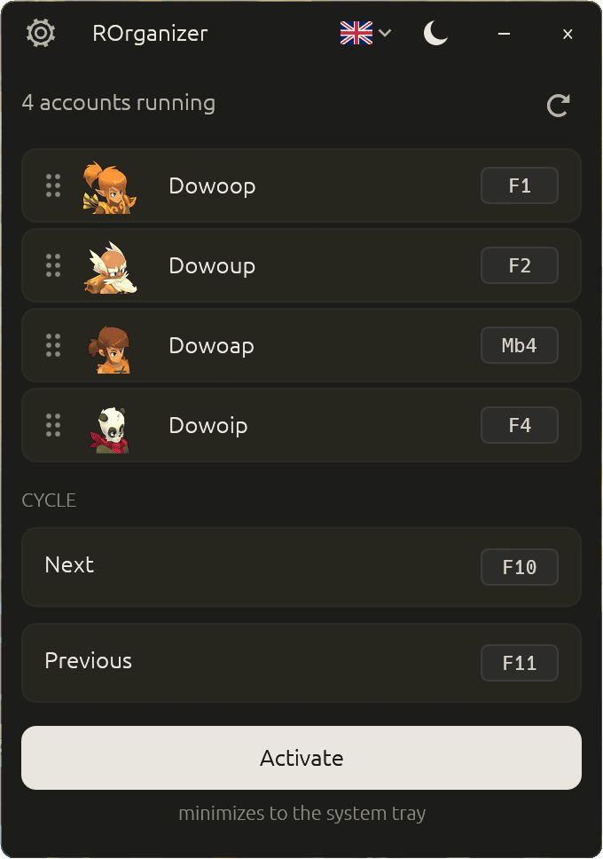

Switch between your Dofus accounts with one key.
A free, open-source multi-account organizer for Dofus Unity and Dofus Retro.
Playing up to eight accounts at once? Give each one a key and move between them instantly. Without touching the game, without a network connection, without the bloat.
Free · Windows 10 and 11 · a single file, no installer
One key, one account:

Why this one
A tool that listens to your keyboard should be readable.
Inspired by nAiO Organizer, which the Dofus community knows well — but entirely open source. For a program that watches your shortcuts and your windows, that changes everything.
- The code is public
- Anyone can read it and confirm there is no keylogger, no telemetry, no hidden connection.
- The file you download is verifiable
- Every release is built by GitHub from the public source, never on a personal machine. It ships with a proof of origin you can check with one command — and that nobody else can forge.
- It does not die with me
- If I stop working on it, anyone can pick it up. Your tool does not depend on one person.
It does not read the game, modify it, or send it anything. ROrganizer only listens for your shortcuts and brings the right window forward — exactly what Alt+Tab does in Windows.
Privacy
Offline, and you can check it.
- The app never connects to any server.
- It does not touch Dofus. It does not read the game, modify it, or send it anything. It listens for your shortcuts and brings the right window forward.
- No keystroke is ever recorded. Shortcuts are recognised on the fly, then forgotten.
- The only file written to your disk is its own configuration: your shortcuts, your language, your theme.
What it does
Six things, done well.
- Automatic detectionYour accounts appear as soon as they launch, on Dofus, Dofus Retro and Dofus Experimental.
- One shortcut per accountA keyboard key or a mouse button. F3 Mb4
- Cycle through accountsA next shortcut, a previous one, and you go round your whole team.
- Drag and dropArrange your accounts in whatever order suits you.
- Light or dark themeIn French, English or Spanish.
- Quiet in the system trayEnable or disable it with one click, without quitting.
Real footprint
Light enough to forget about.
Measured at idle, app running, while you play.
- ~8
- MBthe executable
- ~75
- MBof RAM in use
- 0 %
- CPUwhile you play
- <¼s
- detectionof a new account
Getting started
Three steps, no installation.
- Download
Grab the file from the releases page. No installer, no dependencies.
- Run
Double-click it. ROrganizer detects accounts that are already open on its own.
- Configure
Click “set” next to an account, then press the key you want to give it.
Verify
Two commands to be sure of what you are running.
GitHub shows the checksum of every published file next to its name. Compare it with yours:
> Get-FileHash .\ROrganizer-<version>-x86_64-windows.exe -Algorithm SHA256
And from version 1.3.0 onwards, every file carries a proof of origin signed by GitHub, binding it to the public source and the published tag:
> gh attestation verify .\ROrganizer-<version>-x86_64-windows.exe --repo Loulouw/ROrganizer
The full procedure is documented in the project's security policy.
Questions
What people ask me most.
Do I have to configure each account one by one?
No. ROrganizer automatically detects all your accounts as soon as they launch, on the standard client as well as Dofus Retro and Dofus Experimental. You only assign a shortcut to each one, and it is remembered. Retro accounts appear without a class icon: their window does not state the class.
Could I get banned for using it?
ROrganizer does not interact with Dofus. It does not read the game, modify it, or send it any command. It brings a window to the front — exactly what Alt+Tab does in Windows. That said, using third-party tools remains at your own risk under Ankama's terms of service.
Do my shortcuts work while I'm in game?
Yes. They are listened for at the Windows global level, so they work whichever window is in the foreground. One caveat: if Dofus runs as administrator, run ROrganizer as administrator too.
Windows shows a blue warning on first launch — is that normal?
Yes. ROrganizer is not signed with a code-signing certificate, which costs several hundred euros a year and is not justifiable for a free project. Windows SmartScreen warns as a precaution about any program it rarely sees. Click “More info”, then “Run anyway”.
My antivirus flags a “trojan” — is the app dangerous?
No, it is a false positive. To trigger your shortcuts even when Dofus is in the foreground, ROrganizer has to listen to the keyboard and mouse at the Windows global level, then bring a window forward. An antivirus that judges a program by its shape, without reading its code, cannot tell that mechanism apart from spyware. The name it shows — often Wacatac — is a generic label assigned automatically, not the identification of a known virus.
What you can check yourself: the source is public, no keystroke is recorded, and the app connects to no server — observable in the Windows Resource Monitor. Every false positive is reported to Microsoft when a release ships, but the correction takes a few days to propagate. In the meantime you can add the file as an exclusion in your antivirus, after checking its checksum.
How do I uninstall it?
Delete the file. Your preferences live in %APPDATA%\rorganizer\ — delete that folder for a full clean-up. No registry key modified, no service installed.
Beware of counterfeits
ROrganizer is downloaded only from the releases page of the GitHub repository, as a single executable file.
It is never distributed:
- inside a
.zip,.raror.7zarchive — least of all a password-protected one; - as a
.bat,.cmd,.ps1or.vbsscript; - through an installer or a
setup.exe; - from a file host, a Discord link, a forum or a mirror site.
An archive password shared separately — in a video, a comment, a private message — exists to defeat the file host's automated malware scanning. That alone is a red flag.
Any file carrying the ROrganizer name that does not match this description did not come from me, whatever the source offering it.